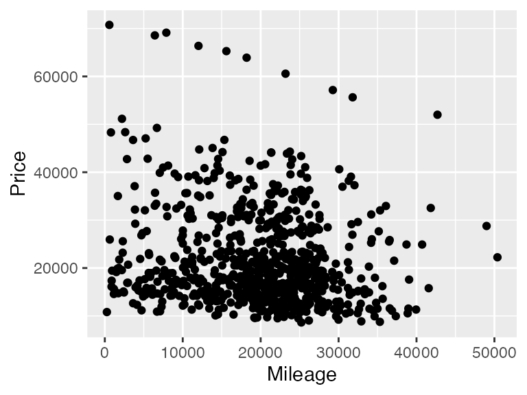
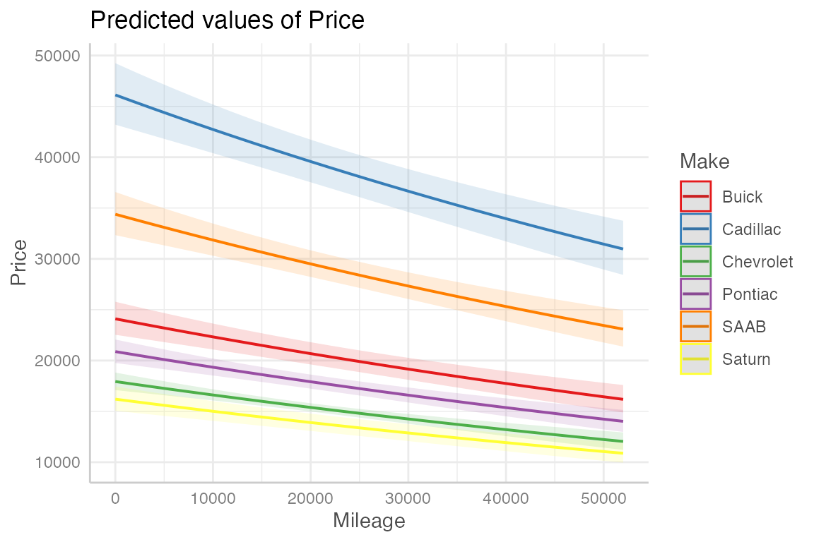
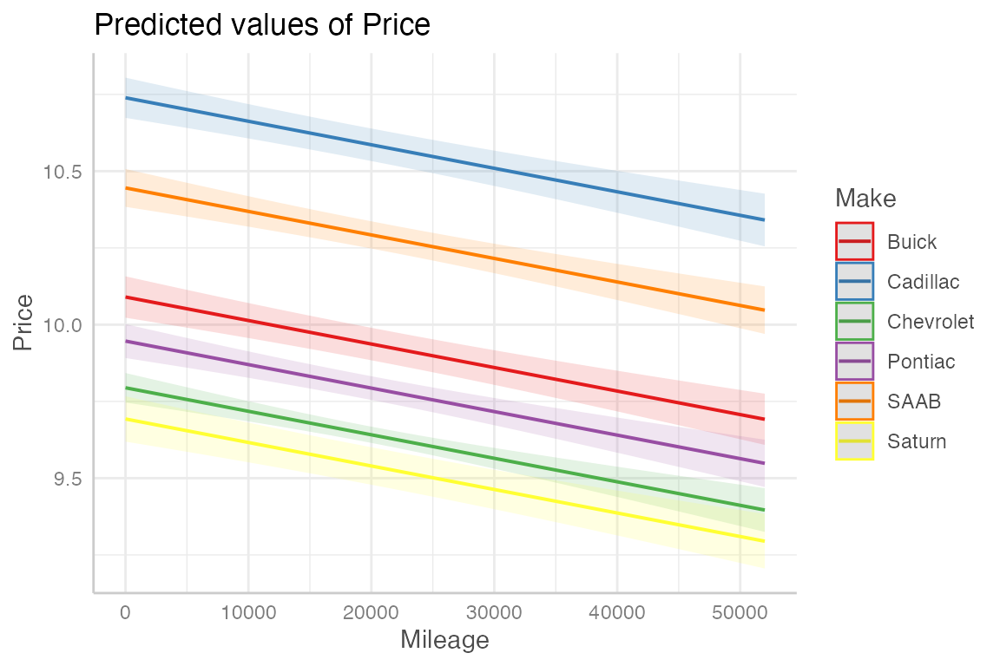
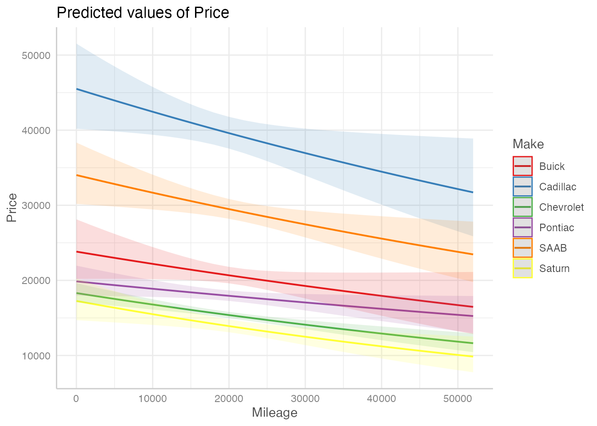

library(ggformula)11: Inference for MLR
Overview
In this activity you will learn how to include build multiple regression models in R, including models with categorical predictors. The cars data set loaded below contains information on used cars for sale, including their Price, Mileage, and Make (a categorical variable with six levels).
cars <- read.csv("https://aloy.github.io/stat230-materials/data/Cars.csv", stringsAsFactors = TRUE)Thinking about the data
To begin, create a scatterplot of Price versus Mileage.
gf_point(Price ~ Mileage, data = cars) 
Q1. What do you notice about the relationship between these two variables? Is a transformation necessary?
There appears to be negative correlation, and some outliers in the Y direction. There may be some curvature. A transformation may help.
Q2. The Make variable is categorical with six levels: Buick, Cadillac, Chevrolet, Pontiac, SAAB, and Saturn. To include this variable in a regression model, we need use indicator (i.e., dummy) variables. How many do we need?
There are 6 levels so we need 5 indicator variables
Fitting an MLR model
Build (fit) a multiple regression model using log(Price) as the response with Mileage and Make as the predictor variables. To do this, you use + to separate the predictor variable on the right side of the ~ in the model formula. R will automatically convert a categorical explanatory variable into a set of indicator variables.
car_lm <- lm(log(Price) ~ Mileage + Make, data = cars)
summary(car_lm)
Call:
lm(formula = log(Price) ~ Mileage + Make, data = cars)
Residuals:
Min 1Q Median 3Q Max
-0.53728 -0.14506 -0.02741 0.10750 1.00719
Coefficients:
Estimate Std. Error t value Pr(>|t|)
(Intercept) 1.009e+01 3.432e-02 293.975 < 2e-16 ***
Mileage -7.659e-06 1.041e-06 -7.359 4.61e-13 ***
MakeCadillac 6.490e-01 3.814e-02 17.016 < 2e-16 ***
MakeChevrolet -2.956e-01 3.014e-02 -9.809 < 2e-16 ***
MakePontiac -1.435e-01 3.339e-02 -4.299 1.93e-05 ***
MakeSAAB 3.554e-01 3.516e-02 10.108 < 2e-16 ***
MakeSaturn -3.972e-01 4.116e-02 -9.650 < 2e-16 ***
---
Signif. codes: 0 '***' 0.001 '**' 0.01 '*' 0.05 '.' 0.1 ' ' 1
Residual standard error: 0.241 on 797 degrees of freedom
Multiple R-squared: 0.6572, Adjusted R-squared: 0.6546
F-statistic: 254.7 on 6 and 797 DF, p-value: < 2.2e-16Q3. Report the fitted regression equation and the \(R^2\) value.
\[ \begin{aligned} \operatorname{\widehat{log(Price)}} &= 10.09 + 0(\operatorname{Mileage}) + 0.65(\operatorname{Make}_{\operatorname{Cadillac}})\ - \\ &\quad 0.3(\operatorname{Make}_{\operatorname{Chevrolet}}) - 0.14(\operatorname{Make}_{\operatorname{Pontiac}}) + 0.36(\operatorname{Make}_{\operatorname{SAAB}})\ - \\ &\quad 0.4(\operatorname{Make}_{\operatorname{Saturn}}) \end{aligned} \]
Q4. Which level of Make is the baseline? The baseline level is represented by 0’s across all of the indicator variables and won’t have a coefficient in the output.
Buick (the category without an indicator variable)
Q5. What strategy did R use to create the indicator variables for Make? In other words, how did R decide which level of Make to use as the baseline?
Alphabetical order!
Q6. Which of the following models best describes the one just fit: parallel lines, different slopes, or separate lines?
Parallel lines
Plotting the fitted model
To plot a fitted regression model, we can use the ggpredict() and plot() functions in the {ggeffects} package. The ggpredict() function creates a data frame of predicted values from the model for each Make across a range of Mileage values. The plot() function then creates a plot of these predicted values.
library(ggeffects)
cars_pred <- ggpredict(car_lm, terms = ~Mileage + Make)
plot(cars_pred)
Q7. Does this plot confirm your answer to the previous question?
It’s kind of hard to tell, since the lines are on the original scale. Telling ggpredict to not back-transform makes it clear that yes, this is a parallel lines model.
cars_pred <- ggpredict(car_lm, terms = ~Mileage + Make,
back_transform = FALSE)
plot(cars_pred)
Fitting a model with interactions
If we believe that the association between Price and Mileage differs by Make, then we can include an interaction term in our model. To do this, we use * instead of + to separate the predictor variables on the right side of the ~ in the model formula. This will include both main effects and the interaction term.
car_lm2 <- lm(log(Price) ~ Mileage * Make, data = cars)
summary(car_lm2)
Call:
lm(formula = log(Price) ~ Mileage * Make, data = cars)
Residuals:
Min 1Q Median 3Q Max
-0.53137 -0.14306 -0.02311 0.10811 0.99917
Coefficients:
Estimate Std. Error t value Pr(>|t|)
(Intercept) 1.008e+01 8.447e-02 119.315 < 2e-16 ***
Mileage -7.099e-06 3.918e-06 -1.812 0.070409 .
MakeCadillac 6.469e-01 1.056e-01 6.127 1.41e-09 ***
MakeChevrolet -2.633e-01 9.147e-02 -2.878 0.004106 **
MakePontiac -1.819e-01 9.871e-02 -1.843 0.065680 .
MakeSAAB 3.561e-01 1.042e-01 3.418 0.000664 ***
MakeSaturn -3.225e-01 1.174e-01 -2.746 0.006166 **
Mileage:MakeCadillac 1.578e-07 4.953e-06 0.032 0.974593
Mileage:MakeChevrolet -1.623e-06 4.251e-06 -0.382 0.702655
Mileage:MakePontiac 2.019e-06 4.615e-06 0.438 0.661826
Mileage:MakeSAAB -4.921e-08 4.760e-06 -0.010 0.991754
Mileage:MakeSaturn -3.673e-06 5.393e-06 -0.681 0.496041
---
Signif. codes: 0 '***' 0.001 '**' 0.01 '*' 0.05 '.' 0.1 ' ' 1
Residual standard error: 0.2414 on 792 degrees of freedom
Multiple R-squared: 0.6582, Adjusted R-squared: 0.6535
F-statistic: 138.7 on 11 and 792 DF, p-value: < 2.2e-16Q8`. Report the fitted regression equation for Buicks and Cadillacs.
Q9. What is the \(R^2\) value for this model? Does this model appear to fit the data better than the previous model?
Plotting the fitted model with interactions
To plot the interaction model, we again use the ggpredict() and plot() functions in the {ggeffects} package.
cars_pred2 <- ggpredict(car_lm2, terms = ~Mileage + Make)
# Now plot the predictions
plot(cars_pred2)
Calculating extra sums of squares F-tests
Do we really need the interaction terms? To answer this question, we can use an extra sums of squares F-test to compare the model with interaction terms to the model without interaction terms.
We have already seen how to use the anova() function to compare two nested models. Here, we will use it again to compare our two car models.
Q10. Fill in the blanks to run the extra sums of squares F-test. What do you conclude about the interaction terms?
anova(car_lm2, car_lm)Analysis of Variance Table
Model 1: log(Price) ~ Mileage * Make
Model 2: log(Price) ~ Mileage + Make
Res.Df RSS Df Sum of Sq F Pr(>F)
1 792 46.160
2 797 46.297 -5 -0.13714 0.4706 0.7983Using only the full model
We can also calculate the extra sums of squares F-test using only the full model. To do this, we need to extract the SSE and degrees of freedom for both models from the ANOVA table for the full model.
Q11. Run the below code and verify that the df, sums of squares, mean squares, F value, and p-value match what you got from the previous anova() command.
anova(car_lm2)Analysis of Variance Table
Response: log(Price)
Df Sum Sq Mean Sq F value Pr(>F)
Mileage 1 2.959 2.9591 50.7715 2.336e-12 ***
Make 5 85.802 17.1603 294.4325 < 2.2e-16 ***
Mileage:Make 5 0.137 0.0274 0.4706 0.7983
Residuals 792 46.160 0.0583
---
Signif. codes: 0 '***' 0.001 '**' 0.01 '*' 0.05 '.' 0.1 ' ' 1Function quick reference
The following table summarizes the functions we learned today:
| Function | Purpose |
|---|---|
lm() |
Fit a linear model |
summary() |
Display detailed results from a fitted model |
ggpredict() |
Create a data frame of predicted values from a fitted model |
plot() |
Create a plot of predicted values from a fitted model |
anova() |
Create an ANOVA table for a fitted model or compare two nested models |